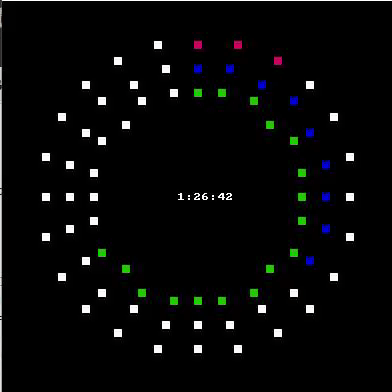
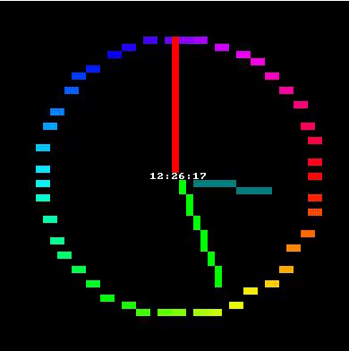
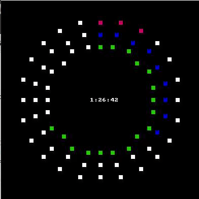
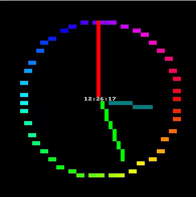

Visualize a clock
Posted: 06 May 2018 10:37
Hello all ^-^
A great exercise is to visualize a clock in code. I suggest you all try it!
Enjoy! WIN 10 ONLY!
Excuse the flicker, I believe it is from GYAZO gif
 
A great exercise is to visualize a clock in code. I suggest you all try it!
Enjoy! WIN 10 ONLY!
Excuse the flicker, I believe it is from GYAZO gif
 
Code: Select all
@echo off & setlocal EnableDelayedExpansion
mode 49,49
call :macros
set /a "PI=(35500000/113+5)/10, PI_div_2=(35500000/113/2+5)/10, PIx2=2*PI, PI32=PI+PI_div_2"
set "_SIN=a-a*a/1920*a/312500+a*a/1920*a/15625*a/15625*a/2560000-a*a/1875*a/15360*a/15625*a/15625*a/16000*a/44800000"
set "SIN(x)=(a=(x * 31416 / 180)%%62832, c=(a>>31|1)*a, a-=(((c-47125)>>31)+1)*((a>>31|1)*62832) + (-((c-47125)>>31))*( (((c-15709)>>31)+1)*(-(a>>31|1)*31416+2*a) ), %_SIN%) / 10000"
set "COS(x)=(a=(15708 - x * 31416 / 180)%%62832, c=(a>>31|1)*a, a-=(((c-47125)>>31)+1)*((a>>31|1)*62832) + (-((c-47125)>>31))*( (((c-15709)>>31)+1)*(-(a>>31|1)*31416+2*a) ), %_SIN%) / 10000"
set "_SIN="
for /l %%# in () do (
for /f "tokens=1-3 delims=:" %%a in ("!time:~0,-3!") do (
set "th=%%a"
set "tm=%%b"
set "ts=%%c"
if "!tm:~0,1!" equ "0" set "tm=!tm:~1!"
if "!ts:~0,1!" equ "0" set "ts=!ts:~1!"
)
echo %esc%[25;22H!th!:!tm!:!ts!
for /l %%c in (0,15,360) do ( set /a "cx=20 * !cos(x):x=%%c! + 25", "cy=20 * !sin(x):x=%%c! + 25"
%plot_HSL_RGB% !cx! !cy! 1 10000 10000 Û
)
set /a "harc=270 + (30 * th)"
for /l %%c in (270,15,!harc!) do ( set /a "cx=20 * !cos(x):x=%%c! + 25", "cy=20 * !sin(x):x=%%c! + 25"
%plot_HSL_RGB% !cx! !cy! 330 10000 4000 Û
)
for /l %%c in (0,15,360) do ( set /a "cx=17 * !cos(x):x=%%c! + 25", "cy=17 * !sin(x):x=%%c! + 25"
%plot_HSL_RGB% !cx! !cy! 1 10000 10000 Û
)
set /a "marc=270 + tm * 6"
for /l %%c in (270,15,!marc!) do ( set /a "cx=17 * !cos(x):x=%%c! + 25", "cy=17 * !sin(x):x=%%c! + 25"
%plot_HSL_RGB% !cx! !cy! 240 10000 4000 Û
)
for /l %%c in (0,15,360) do ( set /a "cx=14 * !cos(x):x=%%c! + 25", "cy=14 * !sin(x):x=%%c! + 25"
%plot_HSL_RGB% !cx! !cy! 1 10000 10000 Û
)
set /a "sarc=270 + ts * 6"
for /l %%c in (270,15,!sarc!) do ( set /a "cx=14 * !cos(x):x=%%c! + 25", "cy=14 * !sin(x):x=%%c! + 25"
%plot_HSL_RGB% !cx! !cy! 110 10000 4000 Û
)
<nul set /p "=%esc%[2J%esc%[?25l!screen!"
set "screen="
)
pause>nul
:macros
set ^"LF=^
^" Above empty line is required - do not remove
set ^"\n=^^^%LF%%LF%^%LF%%LF%^^"
for /F %%a in ('echo prompt $E^| cmd') do set "ESC=%%a"
rem %RGBplot% x y 0-255 0-255 0-255 CHAR
set RBGplot=for %%# in (1 2) do if %%#==2 ( for /f "tokens=1-6" %%1 in ("^!args^!") do (%\n%
set "screen=^!screen^!^!esc^![%%2;%%1H^!esc^![38;2;%%3;%%4;%%5m%%6^!esc^![0m"%\n%
)) else set args=
REM plot_HSL_RGB x y 0-360 0-10000 0-10000
set plot_HSL_RGB=for %%# in (1 2) do if %%#==2 ( for /f "tokens=1-6" %%1 in ("^!args^!") do (%\n%
set /a "H=%%~3", "S=%%~4", "L=%%~5"%\n%
if %%3 geq 360 set /a "H=360"%\n%
if %%3 leq 0 set /a "H=0"%\n%
set /a "va=2*L-10000"%\n%
for /f "tokens=1" %%a in ("^!va^!") do if %%a lss 0 set /a "va=-va"%\n%
set /a "C=(10000-va)*S/10000"%\n%
set /a "h1=H*10000/60"%\n%
set /a "mm=(h1 %% 20000) - 10000"%\n%
for /f "tokens=1" %%a in ("^!mm^!") do if %%a lss 0 set /a "mm=-mm"%\n%
set /a "X=C *(10000 - mm)/10000"%\n%
set /a "m=L - C/2"%\n%
for /f "tokens=1" %%a in ("^!H^!") do (%\n%
if %%a lss 60 ( set /a "R=C+m", "G=X+m", "B=0+m" ) else (%\n%
if %%a lss 120 ( set /a "R=X+m", "G=C+m", "B=0+m" ) else (%\n%
if %%a lss 180 ( set /a "R=0+m", "G=C+m", "B=X+m" ) else (%\n%
if %%a lss 240 ( set /a "R=0+m", "G=X+m", "B=C+m" ) else (%\n%
if %%a lss 300 ( set /a "R=X+m", "G=0+m", "B=C+m" ) else (%\n%
if %%a lss 360 ( set /a "R=C+m", "G=0+m", "B=X+m" ))))))%\n%
)%\n%
set /a "R=R*255/10000", "G=G*255/10000", "B=B*255/10000"%\n%
for /f "tokens=1-3" %%a in ("^!R^! ^!G^! ^!B^!") do ^!RBGplot^! %%1 %%2 %%a %%b %%c %%6%\n%
)) else set args=
goto :eofCode: Select all
@echo off & setlocal EnableDelayedExpansion
mode 49,49
call :macros
set /a "PI=(35500000/113+5)/10, PI_div_2=(35500000/113/2+5)/10, PIx2=2*PI, PI32=PI+PI_div_2"
set "_SIN=a-a*a/1920*a/312500+a*a/1920*a/15625*a/15625*a/2560000-a*a/1875*a/15360*a/15625*a/15625*a/16000*a/44800000"
set "SIN(x)=(a=(x * 31416 / 180)%%62832, c=(a>>31|1)*a, a-=(((c-47125)>>31)+1)*((a>>31|1)*62832) + (-((c-47125)>>31))*( (((c-15709)>>31)+1)*(-(a>>31|1)*31416+2*a) ), %_SIN%) / 10000"
set "COS(x)=(a=(15708 - x * 31416 / 180)%%62832, c=(a>>31|1)*a, a-=(((c-47125)>>31)+1)*((a>>31|1)*62832) + (-((c-47125)>>31))*( (((c-15709)>>31)+1)*(-(a>>31|1)*31416+2*a) ), %_SIN%) / 10000"
set "_SIN="
for /l %%# in () do (
%= Capture time elements =%
for /f "tokens=1-3 delims=:" %%a in ("!time:~0,-3!") do (
set "th=%%a"
set "tm=%%b"
set "ts=%%c"
if "!tm:~0,1!" equ "0" set "tm=!tm:~1!"
if "!ts:~0,1!" equ "0" set "ts=!ts:~1!"
)
echo %esc%[25;22H!th!:!tm!:!ts!
%= Clock diameter =%
for /l %%a in (1,8,360) do ( set /a "cx=20 * !cos(x):x=%%a! + 25", "cy=20 * !sin(x):x=%%a! + 25"
set /a "H=%%a %% 360"
%plot_HSL_RGB% !cx! !cy! !H! 10000 5000 ÛÛ
)
%= HOUR LINE =%
set /a "harc=270 + (30 * th)"
set /a "cx=20 * !cos(x):x=harc! + 25", "cy=20 * !sin(x):x=harc! + 25"
%line% 25 25 !cx! !cy! Û 9
%= MINUTE LINE =%
set /a "marc=270 + tm * 6"
set /a "cx=17 * !cos(x):x=marc! + 25", "cy=17 * !sin(x):x=marc! + 25"
%line% 25 25 !cx! !cy! Û 10
%= SECOND LINE=%
set /a "sarc=270 + ts * 6"
set /a "cx=14 * !cos(x):x=sarc! + 25", "cy=14 * !sin(x):x=sarc! + 25"
%line% 25 25 !cx! !cy! Û 6
<nul set /p "=%esc%[2J%esc%[?25l!screen!"
set "screen="
)
pause>nul
:macros
set ^"LF=^
^" Above empty line is required - do not remove
set ^"\n=^^^%LF%%LF%^%LF%%LF%^^"
for /F %%a in ('echo prompt $E^| cmd') do set "ESC=%%a"
rem %RGBplot% x y 0-255 0-255 0-255 CHAR
set RBGplot=for %%# in (1 2) do if %%#==2 ( for /f "tokens=1-6" %%1 in ("^!args^!") do (%\n%
set "screen=^!screen^!^!esc^![%%2;%%1H^!esc^![38;2;%%3;%%4;%%5m%%6^!esc^![0m"%\n%
)) else set args=
REM plot_HSL_RGB x y 0-360 0-10000 0-10000
set plot_HSL_RGB=for %%# in (1 2) do if %%#==2 ( for /f "tokens=1-6" %%1 in ("^!args^!") do (%\n%
set /a "H=%%~3", "S=%%~4", "L=%%~5"%\n%
if %%3 geq 360 set /a "H=360"%\n%
if %%3 leq 0 set /a "H=0"%\n%
set /a "va=2*L-10000"%\n%
for /f "tokens=1" %%a in ("^!va^!") do if %%a lss 0 set /a "va=-va"%\n%
set /a "C=(10000-va)*S/10000"%\n%
set /a "h1=H*10000/60"%\n%
set /a "mm=(h1 %% 20000) - 10000"%\n%
for /f "tokens=1" %%a in ("^!mm^!") do if %%a lss 0 set /a "mm=-mm"%\n%
set /a "X=C *(10000 - mm)/10000"%\n%
set /a "m=L - C/2"%\n%
for /f "tokens=1" %%a in ("^!H^!") do (%\n%
if %%a lss 60 ( set /a "R=C+m", "G=X+m", "B=0+m" ) else (%\n%
if %%a lss 120 ( set /a "R=X+m", "G=C+m", "B=0+m" ) else (%\n%
if %%a lss 180 ( set /a "R=0+m", "G=C+m", "B=X+m" ) else (%\n%
if %%a lss 240 ( set /a "R=0+m", "G=X+m", "B=C+m" ) else (%\n%
if %%a lss 300 ( set /a "R=X+m", "G=0+m", "B=C+m" ) else (%\n%
if %%a lss 360 ( set /a "R=C+m", "G=0+m", "B=X+m" ))))))%\n%
)%\n%
set /a "R=R*255/10000", "G=G*255/10000", "B=B*255/10000"%\n%
for /f "tokens=1-3" %%a in ("^!R^! ^!G^! ^!B^!") do ^!RBGplot^! %%1 %%2 %%a %%b %%c %%6%\n%
)) else set args=
rem %plot% x y 0-255 0-255 CHAR
set plot=for %%# in (1 2) do if %%#==2 ( for /f "tokens=1-5" %%1 in ("^!args^!") do (%\n%
set "screen=^!screen^!!esc![%%2;%%1H!esc![38;5;%%3m!esc![48;5;%%4m%%~5!esc![0m"%\n%
)) else set args=
rem LINE x0 y0 x1 y1 COLOR CHAR
set line=for %%# in (1 2) do if %%#==2 ( for /f "tokens=1-6" %%1 in ("^!args^!") do (%\n%
if "%%~6" equ "" ( set "hue=30" ) else ( set "hue=%%~6")%\n%
set /a "xa=%%~1", "ya=%%~2", "xb=%%~3", "yb=%%~4", "dx=%%~3 - %%~1", "dy=%%~4 - %%~2"%\n%
for /f "tokens=1-2" %%6 in ("^!dx^! ^!dy^!") do (%\n%
if %%~7 lss 0 ( set /a "dy=-%%~7", "stepy=-1" ) else ( set "stepy=1" )%\n%
if %%~6 lss 0 ( set /a "dx=-%%~6", "stepx=-1" ) else ( set "stepx=1" )%\n%
set /a "dx<<=1", "dy<<=1"%\n%
)%\n%
for /f "tokens=1-9" %%a in ("^!dx^! ^!dy^! ^!xa^! ^!xb^! ^!ya^! ^!yb^! ^!stepx^! ^!stepy^! ^!hue^!") do (%\n%
if %%~a gtr %%~b (%\n%
set /a "fraction=%%~b - (%%~a >> 1)"%\n%
for /l %%x in (%%~c,%%~g,%%~d) do (%\n%
for /f "tokens=1" %%6 in ("^!fraction^!") do if %%~6 geq 0 set /a "ya+=%%~h", "fraction-=%%~a"%\n%
set /a "fraction+=%%~b"%\n%
for /f "tokens=1" %%6 in ("^!ya^!") do (%\n%
if 0 leq %%x if %%x lss 199 if 0 leq %%~6 if %%~6 lss 199 ^!plot^! %%x %%~6 %%i 0 %%~5%\n%
)%\n%
)%\n%
) else (%\n%
set /a "fraction=%%~a - (%%~b >> 1)"%\n%
for /l %%y in (%%~e,%%~h,%%~f) do (%\n%
for /f "tokens=1" %%6 in ("^!fraction^!") do if %%~6 geq 0 set /a "xa+=%%~g", "fraction-=%%~b"%\n%
set /a "fraction+=%%~a"%\n%
for /f "tokens=1" %%6 in ("^!xa^!") do (%\n%
if 0 leq %%~6 if %%~6 lss 199 if 0 leq %%y if %%y lss 199 ^!plot^! %%~6 %%y %%i 0 %%~5%\n%
)%\n%
)%\n%
)%\n%
)%\n%
)) else set args=
goto :eof
.png)